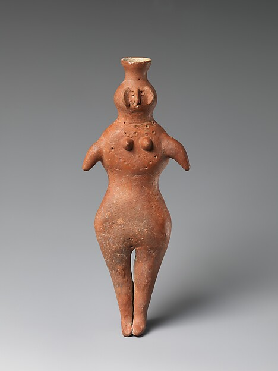
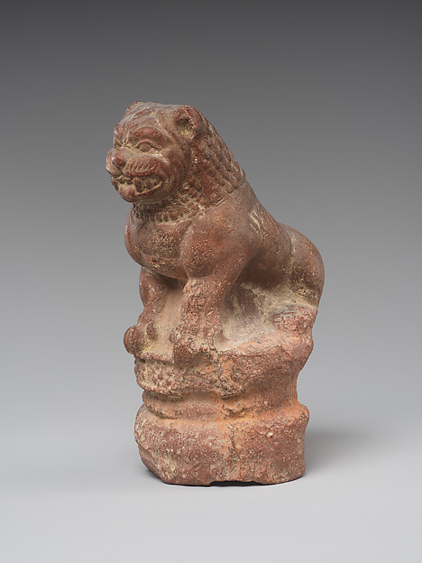
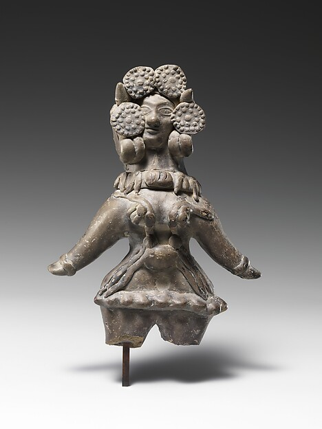
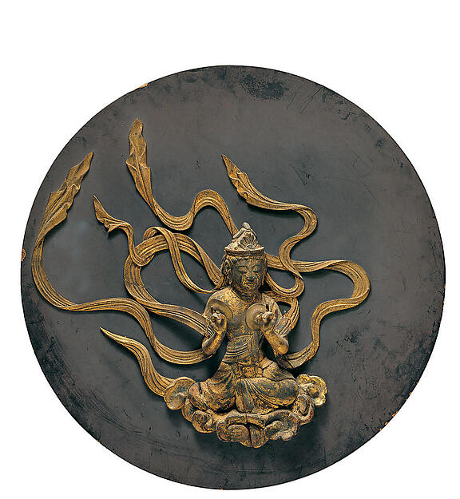
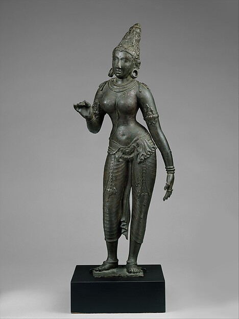
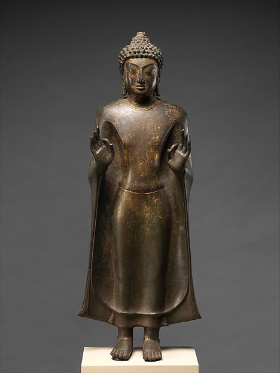

Origin / Discovery
Medium / Technique
Chronological Era
Current Custody
National & International CollectionsCuratorial Context
Civilisational Significance
An interactive journey through 5,000 years of aesthetic philosophy, sacred geometry, and civilisational mastery.

Along the floodplains of the Indus River, four and a half millennia before the modern day, humanity achieved one of its earliest and most astonishing artistic breakthroughs. Unlike their contemporaries in Mesopotamia or Old Kingdom Egypt who erected colossal stone monuments to divine autocrats, Indus artisans focused on intimate human expression, delicate lost-wax casting, and steatite lapidary of sublime subtlety.
"When I first saw her, I found it difficult to believe she was prehistoric. There is nothing like her in the ancient world until Hellenistic Greece."
The Dancing Girl, standing barely 10.5 centimetres in height, exhibits an effortless contrapposto stance, her arm adorned with bangles, resting in self-assured poise. Alongside the meditative contemplation of the Priest-King, these works demonstrate that South Asian art from its inception sought to capture the psychological interiority of the human spirit.
Following the subcontinent's unification under Chandragupta Maurya and the profound moral conversion of Emperor Ashoka the Great, stone sculpture transformed into an instrument of imperial statecraft, philosophical decree, and spiritual enlightenment.
Ashoka erected monolithic pillars reaching up to fifteen metres high across India, Nepal, and Pakistan. Each shaft was quarried from a single block of Chunar sandstone and transported hundreds of miles before receiving an unearthly mirror-polish still gleaming after twenty-three centuries.


The four back-to-back lions symbolize royalty, vigilance, and the roaring voice of the Buddha's dharma radiating to the four cardinal directions. Upon Independence in 1947, the Republic of India adopted this capital as its Supreme National Emblem, embedding the Ashoka Chakra into the center of the Indian flag.

Often heralded as the golden age of classical Indian civilisation, the Gupta dynasty oversaw a sublime harmony between spiritual transcendence and physical sensuality. Under imperial patronage, mathematics gave the world zero, Kalidasa composed immortal Sanskrit drama, and Indian sculptors developed the definitive aesthetic canon for divine representation.
In the rock-hewn sanctuaries of Ajanta, monastic painters applied mineral pigments to wet plaster, crafting murals with emotional complexity, chiaroscuro lighting, and fluid drapery that predated the European Renaissance by a thousand years.
In the fertile Kaveri Delta of Tamil Nadu, the Chola Empire forged a naval empire across Southeast Asia while commissioning the most technologically and philosophically sublime bronze sculptures in the history of humankind.
Within a circular arch of cosmic flames (prabhamandala), Shiva performs the Ananda Tandava — the dance of cosmic bliss. In his upper right hand sits the damaru drum beating out the rhythm of universal creation; in his upper left burns the flame of cyclical destruction.
His lower right hand gestures abhaya-mudra ("fear not"), while his lower left points across his chest to his raised left foot — offering spiritual liberation to all who seek refuge from the dwarf of illusion (Apasmara) beneath his stride.

Under emperors Akbar, Jahangir, and Shah Jahan, the Mughal court established royal ateliers (kitabkhanas) where masters from Shiraz and Tabriz collaborated with master painters from Rajasthan, Gujarat, and Kashmir.
The resulting synthesis was an unprecedented visual language uniting Persian decorative rhythm, Indian naturalism, and European aerial perspective into folios painted with squirrel-hair brushes under magnifying lenses.
"If there be paradise on the face of the earth, it is this, it is this, it is this."
This obsession with chromatic perfection and mathematical symmetry culminated in Shah Jahan's crowning monument: the Taj Mahal. Conceived as a monument of pure white Makrana marble inlaid with lapis lazuli, jade, crystal, and carnelian, it transformed imperial architectural geometry into an earthly manifestation of the gardens of paradise.
The dawn of the twentieth century brought a profound cultural reckoning. Confronted with the ruptures of British colonial rule, the rise of the independence movement, and the global vanguard of Post-Impressionism, Indian painters faced an urgent existential question: What does it mean to create modern art that is authentically Indian?
In Kerala, Raja Ravi Varma mastered European academic oil realism to visualize Indian epics, creating oleograph prints that democratized sacred imagery across millions of households. Soon after, Amrita Sher-Gil returned from the Paris salons, merging Gauguin's emotional color palettes with the poignant dignity of Indian rural life.
"I can only paint in India. Elsewhere I am not fundamental, I have no direction. In Europe, I am just another painter."
— Amrita Sher-Gil, 1934
Indian art is never a fragmented sequence of isolated epochs. It is a continuous five-thousand-year river of conversation between memory and invention, sacred geometry and spontaneous passion, ancient temple stone and the contemporary digital horizon.
Return to the Beginning ↑